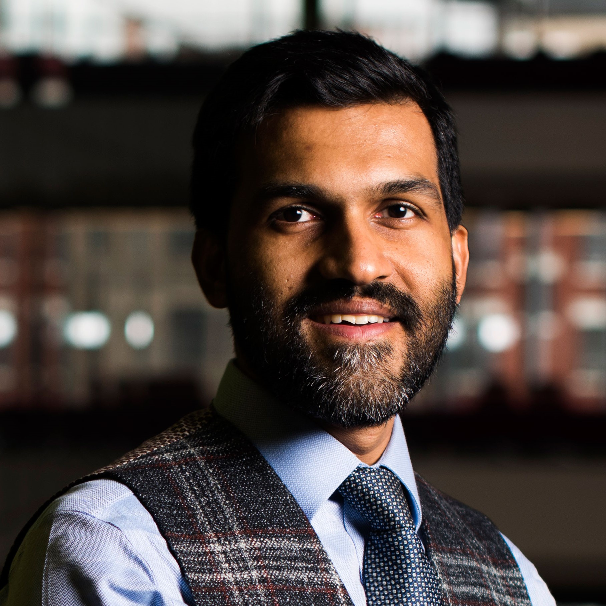
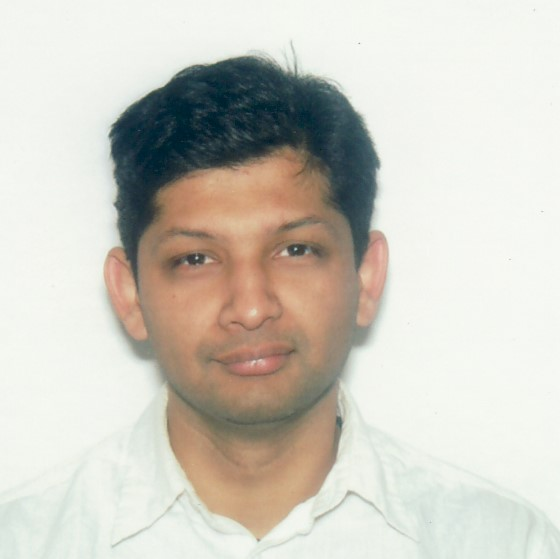

Technical Program
June 24, 2021 (Eastern Daylight Time, EDT)
Please join us on Gather.town
Welcome from TPC Chairs 10:00–10:10
Keynote : "(Air)space is the Final Frontier: Experiments with Learning, Sensing and Communications in UAVs" 10:10–10:50

Speaker: Kaushik Chowdhury
Abstract
The rapid growth in the deployment of unmanned aerial vehicles (UAVs) opens up new paradigms for spectrum sensing, RF actuation, and air-ground communication. In this three-part talk we will cover, from an experimental viewpoint, the challenges in creating intelligent and coordinated UAV swarms that are synchronized in their operation. In the first part, we will show the first of its kind implementation of distributed beamforming with UAVs, with tight constraints on timing and real-time feedback of channel state information. In the second part, we focus on millimeter (mmWave) radio mounted UAVs that can serve as mobile 5G base stations and aerial backhaul links. We will motivate the need for - and then design - new channel models for air-to-air and air-to-ground communication at 60GHz, considering practical limitations of hovering and airframe reflections. In the third part, we shall describe a method that ensures jamming resilient air-ground control channels using a combination of mmWave radar sensing and physical movement of the UAVs to form wireless signal constellations in the air. While concluding, we shall provide a glimpse of other ongoing work in the systems space, including a method for wireless charging of UAVs through magnetic resonant coupling and deploying UAVs within an urban region using an existing public bus transportation network.
Speaker Bio
Kaushik Chowdhury is Professor and Faculty Fellow in the ECE department and Associate Director at the Institute for the Wireless IoT at Northeastern University, Boston. He was awarded the Presidential Early Career Award for Scientists and Engineers (PECASE) in 2017, the DARPA Young Faculty Award in 2017, the Office of Naval Research Director of Research Early Career Award in 2016, and the NSF CAREER award in 2015. He has received best paper awards at several conferences that include, Infocom, Globecom, ICC (3x), SenSys, ICNC, and DySpan. He is presently a co-director of the Platforms for Advanced Wireless Research (PAWR) project office and the Colosseum RF emulator. His current research interests span applied machine learning to wireless systems, networked robotics, wireless charging and at-scale experimentation for emerging 5G and beyond networks.
Virtual Coffee Break 10:50–11:00
Session 1 - The Next Big Thing 11:00–12:00
- Toward a Marketplace for Aerial Computing – Arjun Balasingam, Karthik Gopalakrishnan (MIT), Radhika Mitta (UIUC), Mohammad Alizadeh, Hamsa Balakrishnan, Hari Balakrishnan (MIT)
- POD: A Smartphone That Flies – Guojun Chen, Noah Weiner, Lin Zhong (Yale University)
- A Comparative Study of Virtual Infrastructure Management for UAV Networks – Luis F. Gonzalez, Ivan Vidal, Victor Sanchez-Aguero (Universidad Carlos III de Madrid)
Virtual Lunch Break 12:00 –13:00
Panel Discussion 13:00 –14:00
|
 Karthik Dantu University of Buffalo |
 Eugene Chai NEC Laboratories America, Inc. |
Richard Han Macquarie University |
Virtual Coffee Break 14:00–14:10
Session 2 - Connect Up! 14:10–15:10
- Persistent Airborne Surveillance using Semi-Autonomous Drone swarms – Akhil Bandarupalli, Dhruv Swarup (Purdue University), Noah Weston (Army Research Laboratory), Somali Chaterji (Purdue University)
- Towards Adaptive, Self-Configuring Networked Unmanned Aerial Vehicles – Nirupama Bulusu, Ehsan Aryafar, Feng Liu (Portland State University)
- An Experimental Analysis on Drone-Mounted Access Points for Improved Latency-Reliability – Igor Donevski (Aalborg University), Christian Raffelsberger, Micha Sende, Aymen Fakhreddine (Lakeside Labs GmbH), Jimmy Jessen Nielsen (Aalborg University) - Best Paper Award